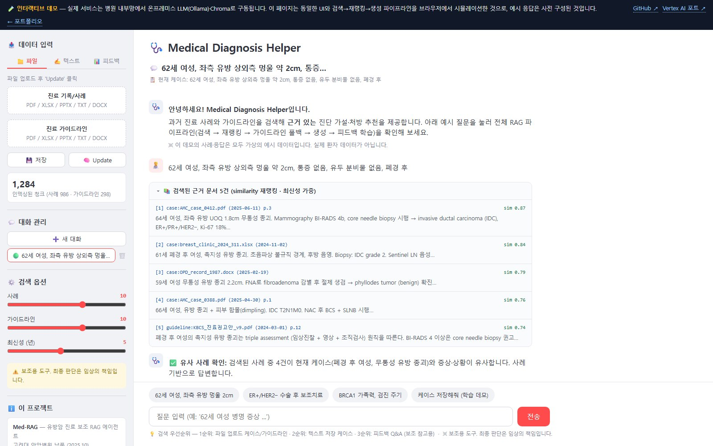

A clinical RAG assistant that shows retrieved evidence beside each answer.In useHyunae Park · AI Builder · Portfolio 2026
I turn ideas into working AI services.
- AIRAG · QLoRA · MCP · Claude API · faster-whisper
- WebTypeScript · React / Next.js · Three.js
- InfraPython · Docker · Cloudflare Workers · Vertex AI

Drag to rotate
Projects
05 PROJECTS · 2025—2026
 An AI workspace with chat, model choice and a personal garden.Public code
An AI workspace with chat, model choice and a personal garden.Public code An internal meeting assistant, from recording to minutes.In operation
An internal meeting assistant, from recording to minutes.In operation A Korean 3D anatomy explorer with body systems you can pull apart.Live
A Korean 3D anatomy explorer with body systems you can pull apart.LiveTimeline
- 2025.10–
MED-RAGA clinical RAG assistant that shows retrieved evidence beside each answer. - 2026.06–Meeting AssistantAn internal meeting assistant, from recording to minutes.
- 2026.07–TerracottaAn AI workspace with chat, model choice and a personal garden.
- 2026.09
MED-RAG Serving Lab
An MLOps experiment that checks LLM changes and prepares release candidates. - 2026.09
RoboSkill Lab
Spoken block-pushing tasks carried out with MuJoCo contact physics. - 2026.09Anatomy AtlasA Korean 3D anatomy explorer with body systems you can pull apart.